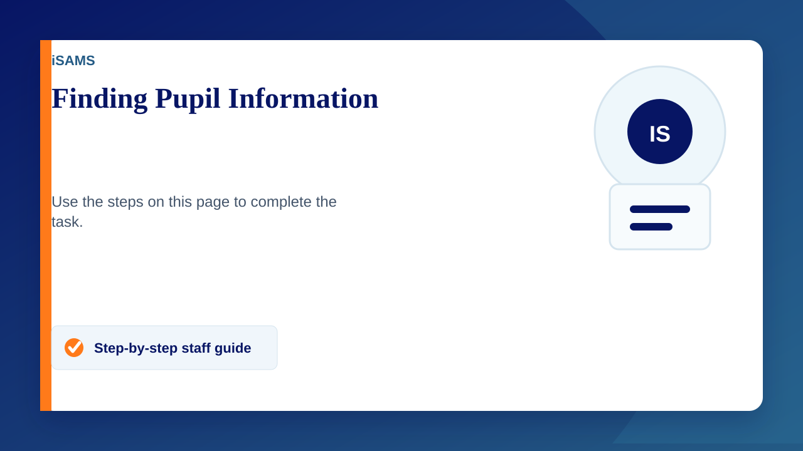
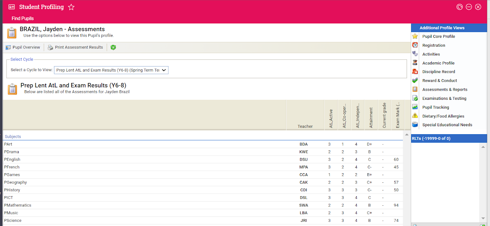
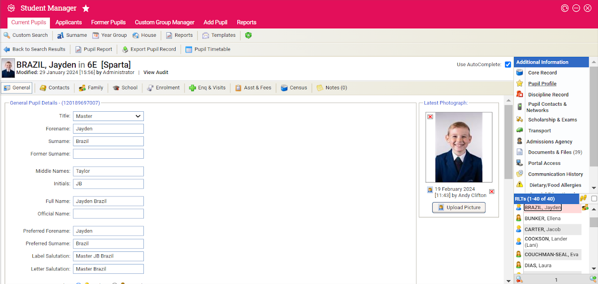

Steps and images provided by Steph
Finding Information about Pupils
- Go to Student Manager
- Select the pupil and click on Student Profile on the RHS
- For Previous Reports click on assessment and reports
- For Rewards and Conduct info click ont Rewards and Conduct
You can play on this bit and get any information that you need

